Endliche Automaten
Grammatiken erlauben es uns, gewisse Formate zu beschreiben. Das reicht uns aber nicht: wir wollen Daten parsen, im engen Sinne also eine grammatische Ableitung rekonstruieren und allgemein die Struktur eines gegebenen Wortes herausarbeiten. Ein bescheideneres Ziel ist es, für ein gegebenes Wort zu entscheiden, ob es sich überhaupt aus einer Grammatik ableiten lässt. Für reguläre Grammatiken gibt es hierfür die endlichen Automaten. Sie können endliche Automaten verstehen als ein eingeschränktes Modell eines Rechners; oder als Blaupause für einen effizienten Algorithmus, um reguläre Grammatiken zu parsen. Hier sehen Sie ein Beispiel für einen endlichen Automaten über dem Alphabet $\Sigma = \{x,y,z\}$. Die Idee ist, dass der Automat ein Wort $\alpha$ Zeichen für Zeichen einliest. Die Pfeile zwischen den Kreisen (den Zuständen des Automaten) zeigen an, in welchen neuen Zustand beim Lesen eines Zeichen gewechselt werden muss. Der Pfeil "aus dem Nichts", hier der von links nach $S$, zeigt den Startzustand an, in welchem der Automat beginnt.
Um zu zeigen, wie der Automat ein Eingabewort verarbeitet, nehmen wir das Beispiel $\alpha = yxzxxyy$.
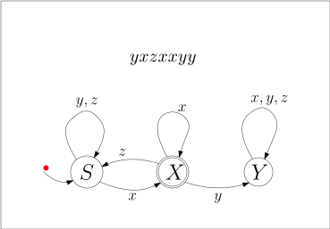
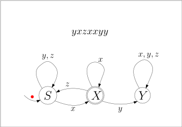
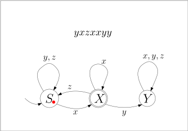
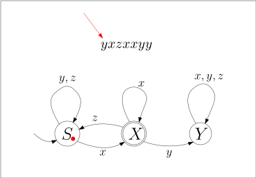
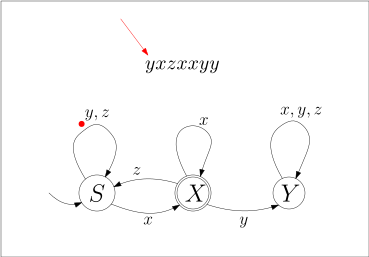
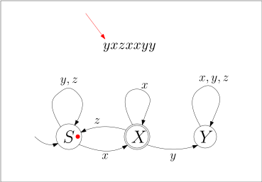
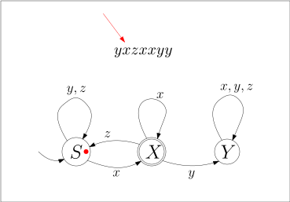
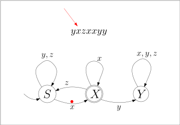
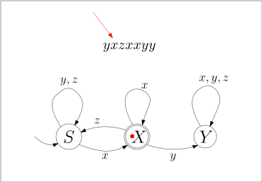
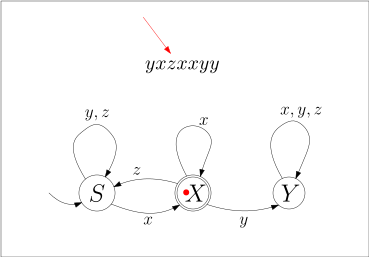
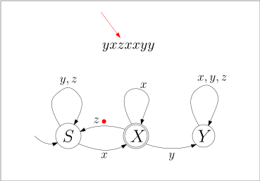
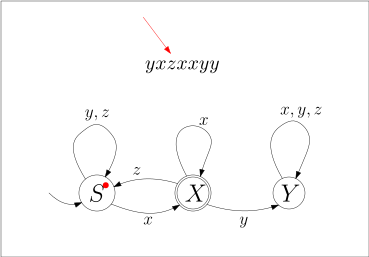
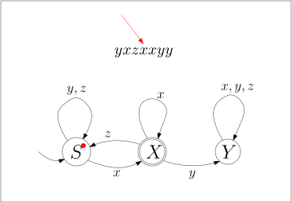
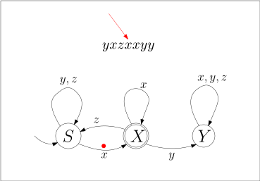
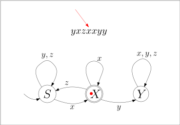
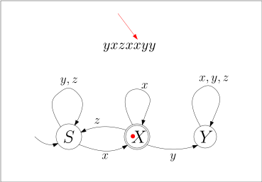
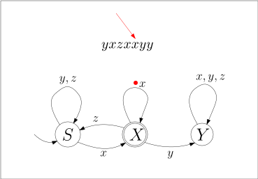
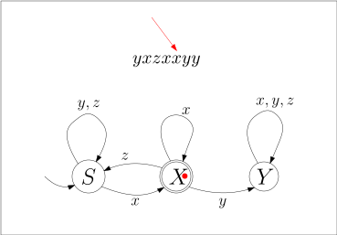
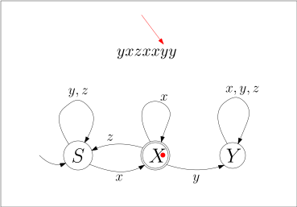
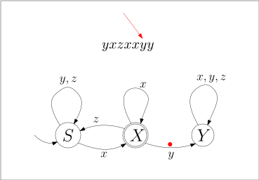
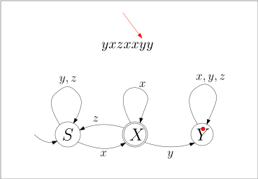
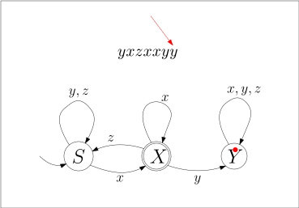
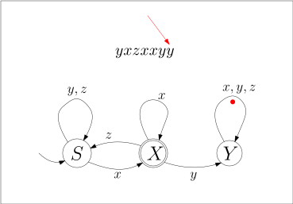
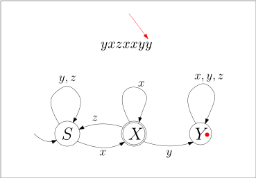
In diesem Beispiel endet der Automat im Zustand $Y$. Sie sehen, dass der Zustand $X$ mit einem doppelten Rand markiert ist: dies symbolisiert, dass $X$ ein akzeptierender Endzustand ist. Wenn der Automat ein Wort $\alpha$ abgearbeitet hat, akzeptiert er es, wenn er in einem akzeptierenden Endzustand gelandet ist; ansonsten lehnt er es ab. In unserem Beispiel sehen wir also, dass der Automat das Eingabewort $yxzxxyy$ ablehnt.
Definition 5.2.1 (Endlicher Automat, Finite State Machine). Ein endlicher Automat besteht aus einem endlichen Eingabealphaet $\Sigma$, einer endlichen Menge $Q$ von Zuständen, einem Startzustand $\qstart \in Q$, einer Menge $F \subseteq Q$ von akzeptierenden Endzuständen und einer Zustandsübergangsfunktion
$$
\begin{align*}
\delta : Q \times \Sigma \rightarrow Q \ .
\end{align*}
$$
Formal gesehen ist also ein Automat ein Quintupel $M = (\Sigma, Q, \qstart, F, \delta)$.
Die Idee ist, dass der Automat im Zustand $\qstart$ startet und nun in jedem Schritt ein weiteres Zeichen des Eingabewortes liest. Wenn er im Zustand $q$ ist und das Zeichen $x$ liest, so wechselt er in den Zustand $\delta(q,x)$. Statt $\delta(q,x) = q'$ verwenden wir die leichter zu lesende Schreibweise
$$
q \stackrel{x}{\rightarrow} q' \ .
$$
Wenn das Wort zu Ende ist, dann akzeptiert der Automat, wenn er in einem akzeptierenden Zustand angekommen ist, also in $F$.
Beispiel 5.2.2 Betrachten wir den endlichen Automaten
und stellen ihn gemäß Definition 1 als Quintupel $M = (\Sigma, Q, \qstart, F, \delta)$ dar mit
$$
\begin{align*}
\Sigma&= \{x,y,z\} \\
Q&= \{S, X, Y\} \\
\qstart&= S \\
F&= \{X\} \ .
\end{align*}
$$
Um noch die Zustandsübergangsfunktion $\delta$ darzustellen, müssen wir uns überlegen, wie wir Funktionen überhaupt darstellen. Da $\delta$ eine endliche Funktion ist, können wir einfach alle Eingabewert-Ausgabewert-Paare hinschreiben, am Besten in einer Tabelle, so wie wir es bereits bei Booleschen Funktionen mit Wahrheitstabellen getan haben. $\delta$ ist also
$$
\begin{align*}
\begin{array}{cc|c}
q&\sigma&\delta(q,x) \\ \hline
S&x&X \\
S&y&S \\
S&z&S \\
X&x&X \\
X&y&Y \\
X&z&S \\
Y&x&Y \\
Y&y&Y \\
Y&z&Y
\end{array}
\end{align*}
$$
Da die Funktion $\delta$ bei jedem endlichen Automaten genau zwei Eingabeparameter hat, können wir es eventuell übersichtlicher als zweidimensionale Tabelle darstellen:
$$
\begin{align*}
\begin{array}{c|c|c|c}
&x&y&z \\ \hline
S&X&S&S \\ \hline
X&X&Y&S \\ \hline
Y&Y&Y&Y
\end{array}
\end{align*}
$$
Diese zwei Tabellen dienen in diesem Beispiel aber nur dazu, noch einmal zu illustrieren, was ich damit meine, wenn ich sage, dass $\delta$ eine Funktion von $Q \times \Sigma$ nach $Q$ ist. Wenn Sie selbst an endlichen Automaten rumbasteln, empfehle ich Ihnen, die Funktion $\delta$ graphisch mit Kreisen und Pfeilen darzustellen, so wie wir es oben getan haben:
Das ist eine völlig legitime Notation für eine Funktion $\delta: Q \times \Sigma \rightarrow Q$ und genau so formal wie die Tabellenschreibweise.
Definition 5.2.3 (Erweiterte Zuständsübergangsfunktion). Für einen endlichen Automaten $(\Sigma, Q, \qstart, F, \delta)$ definieren wir die erweiterte Zustandsübergangsfunktion $\hat{\delta}: Q \times \Sigma^* \rightarrow Q$ rekursiv wie folgt:
$$
\begin{align*}
\hat{\delta} (q, \epsilon)&= q \\
\hat{\delta} (q, x\alpha)&= \hat{\delta} (\delta(x), \alpha) \ .
\end{align*}
$$
$\hat{\delta} (q, \alpha) = q'$ heißt also, dass der Automat, wenn er sich im Zustand $q$ befindet und das Wort $\alpha$ abarbeitet, er danach im Zustand $q'$ landet. Wir schreiben auch kompakt
$$
q \stackrel{\alpha}{\rightarrow} q' \ .
$$
Definition 5.2.4 * (Akzeptierte Sprache). * Sei $M = (\Sigma, Q, \qstart, F, \delta)$ ein endlicher Automat. Die von $M$ akzeptierte Sprache ist
$$
\begin{align*}
L(M) := \{ \alpha \in \Sigma \ | \ \hat{\delta}(\qstart, \alpha) \in F \} \ .
\end{align*}
$$
Beispiel 5.2.5 Der endliche Automat, den wir oben bereits eingeführt haben:
akzeptiert die Sprache aller $\alpha \in \{x,y,z\}$, die auf $x$ enden und nicht die Buchstabenfolge $xy$ enthalten.
Übungsaufgabe 5.2.1 Ändern Sie den Automaten aus dem letzten Beispiel so ab, dass die Bedingung "die auf $x$ enden" entfällt, er also alle Wörter akzeptiert, die die Folge $xy$ nicht enthalten.
Übungsaufgabe 5.2.2 Zeichnen Sie einen Automaten für die Sprache aller Wörter über $\{a,b,c,d\}$, die die Folge $a,b,c,d$ enthalten.
Übungsaufgabe 5.2.3 Zeichnen Sie einen Automaten für die Sprache aller Wörter über $\{a,b,c,d\}$, die genau vier $a$ enthalten.
Endliche Automaten zu regulären Grammatiken
Wenn wir einen endlichen Automaten gegeben haben, dann können wir leicht eine entsprechende reguläre Grammatik dazu bauen, indem wir alle Pfeile einfach in Produktionen übersetzen. Für den Automaten
würde dies beispielsweise die folgenden Produktionen ergeben:
$$
\begin{align*}
S&\rightarrow y S \ | \ zS \ | \ x X \\
X&\rightarrow x X \ | \ z S \ | \ y Y \\
Y&\rightarrow x Y \ | \ y Y \ | \ z Y \\
\end{align*}
$$
und, weil $X$ ein akzeptierender Zustand ist,
$$
\begin{align*}
X&\rightarrow \epsilon
\end{align*}
$$
Dies geht ganz allgemein:
Theorem 5.2.6 Sei $M = (\Sigma, Q, \qstart, F, \delta)$ ein endlicher Automat. Dann gibt es eine reguläre Grammatik $G = (\Sigma, N, P, S)$ mit $L(G) = L(M)$.
Wir nehmen dies als Anlass, um mal wieder einen Induktionsbeweis im Detail durchzuführen.
Beweis. Wir setzen $N = Q$ und $S = \qstart$ und führen für jeden Zustandsübergang, der von $\delta$ beschrieben wird, eine Ableitungsregel ein:
$$
\begin{align*}
q_1 \stackrel{x}{\rightarrow} q_2&\quad \textnormal{ wird zur Produktion } \quad
q_1 \rightarrow xq_2
\end{align*}
$$
Hiermit erhalten wir eine "Zwischengrammatik" $G'$. Die endgültige Grammatik $G$ erhalten wir, indem wir für jeden akzeptierenden Zustand $q \in N$ die Produktion
$$
\begin{align*}
q \rightarrow \epsilon
\end{align*}
$$
einführen. Wir zeigen nun per Induktion:
Behauptung 5.2.7 Sei $\alpha \in \Sigma^*$ und $q, q' \in Q$. Dann gilt $q \stackrel{\alpha}{\rightarrow} q'$ genau dann, wenn $q \Rightarrow^* \alpha q'$ in Grammatik $G'$ gilt.
Bevor wir diese Behauptung beweisen, achten Sie auf die Bedeutung der Symbole. Der einfache Pfeil in $q \stackrel{\alpha}{\rightarrow} q'$ beschreibt die Arbeitsweise des endlichen Automaten, dass nämlich das Verarbeiten von $\alpha$ den Automaten vom Zustand $q$ in den Zustand $q'$ führt. Der doppelte Pfeil in $q \Rightarrow^* \alpha q'$ sagt aus, dass aus dem Nichtterminalsymbol $q$ in der Grammatik $G$ in möglicherweise mehreren Schritten die Wortform $\alpha q'$ abgeleitet werden kann. Der Pfeil $\rightarrow$ "lebt" also im Automaten $M$, der Pfeil $\Rightarrow^*$ lebt in der Grammatik $G'$.
Beweis. Wir verwenden Induktion über die Länge des Wortes $\alpha$. Induktionsbasis. Wenn $\alpha = \epsilon$ gilt, also $\alpha$ die Länge 0 hat, dann gilt $q \stackrel{\epsilon}{\rightarrow} q'$ genau dann, wenn $q = q'$ ist. Wie kann nun $q \Rightarrow^* \epsilon q'$ in $G'$ gelten? Beachten Sie, dass jede Produktion in $G'$ ein Terminalsymbol erzeugt; $q \Rightarrow^* \epsilon q'$ kann also nur gelten, wenn keine Produktion erfolgt ist und somit $q = q'$ gilt. Wir sehen: beide Aussagen sind äquivalent zu $q = q'$ und somit auch äquivalent zueinander. Induktionsschritt. Wenn $\alpha$ die Länge $n+1$ hat, so schreiben wir $\alpha = x \beta$ für ein Wort $\beta \in \Sigma^*$ der Länge $n$. Per Induktionshypothese können wir nun davon ausgehen, dass für alle $q_1, q_2 \in Q$ die Aussage $q_1 \stackrel{\beta}{\rightarrow} q_2$ genau dann gilt, wenn $q_1 \Rightarrow^* \beta q_2$ gilt. Unser Ziel ist es, zu zeigen, dass die beiden folgenden Aussagen äquivalent sind:
-
$q \stackrel{x \beta}{\rightarrow} q'$ im endlichen Automaten $M$,
-
$q \Rightarrow^* x \beta q'$ in der Grammatik $G'$.
Wir müssen beide Richtungen zeigen, also zeigen, dass aus Aussage (1) die Aussage (2) folgt und umgekehrt. Aus (1) folgt (2). Nehmen wir also an, dass $q \stackrel{x \beta}{\rightarrow} q'$ gilt und bezeichnen $q_1 := \delta(q,x)$. Es gilt also
$$
q \stackrel{x}{\rightarrow} q_1 \stackrel{\beta}{\rightarrow} q'
$$
Der erste Teil, also $q \stackrel{x}{\rightarrow} q_1$, bedeutet, dass wir in $G'$ die Produktion $q \rightarrow xq_1$ eingeführt haben. Auf den zweiten Teil, also $q_1 \stackrel{\beta}{\rightarrow} q'$, können wir die Induktionshypothese anwenden und schließen, dass $q_1 \Rightarrow^* \beta q'$ gilt. Nun können wir mit dem Nichtterminal $q$ beginnen, die Produktion $q \rightarrow x q_1$ anwenden und dann mit $q_1$ fortfahrend die Wortform $\beta q'$ ableiten, also
$$
q \Rightarrow x q_1 \Rightarrow^* x \beta q' \ .
$$
Dies zeigt die erste Richtung. Aus (2) folgt (1). Nun nehmen wir an, dass $q \Rightarrow^* x \beta q'$ gilt. Untersuchen wir die erste Produktion, die in dieser Ableitung verwendet worden ist. Alle Produktionen in $G'$ erzeugen ein Terminalsymbol, also muss es eine Produktion der Form
$$
q \rightarrow x q_1
$$
gewesen sein. Die Ableitung hat also die Form
$$
\begin{align*}
q \Rightarrow x q_1 \Rightarrow^* x \beta q' \ ,
\end{align*}
$$
wir können also aus $q_1$ die Wortform $\beta q'$ ableiten: $q_1 \Rightarrow^* \beta q'$. Auf diese Erkenntnis wenden wir die Induktionshypothese an und schließen, dass
$$
q_1 \stackrel{\beta}{\rightarrow} q'
$$
gilt. Die Produktionsregel $q \rightarrow x q_1$ kann nur in $G'$ eingeführt worden sein, weil $\delta(q,x) = q_1$, also $q \stackrel{x}{\rightarrow} q_1$. Somit sehen wir, dass
$$
q \stackrel{x}{\rightarrow} q_1 \stackrel{\beta}{\rightarrow} q'
$$
gilt, also zusammengenommen $q \stackrel{x\beta}{\rightarrow} q'$. Dies zeigt die zweite Richtung. Hiermit endet der Induktionsbeweis.\(\square\)
Wir haben nun die Behauptung bewiesen. Als nächstens betrachten wir die Grammatik $G$ und behaupten, dass $L(G) = L(M)$ gilt. Sei $\alpha \in \Sigma$, dann behaupten wir also, dass wir folgenden zwei Aussagen äquivalent sind:
-
$\qstart \stackrel{\alpha}{\rightarrow} q'$ für einen Zustand $q' \in F$,
-
$\qstart \Rightarrow^* \alpha$ in Grammatik $G$.
Wenn nun also $\qstart \stackrel{\alpha}{\rightarrow} q'$ gilt und $q' \in F$, dann wissen wir von der obigen Behauptung, dass es in $G'$ die Ableitung $\qstart \Rightarrow^* \alpha q'$ gibt. Da $q' \in F$ ist, enthält $G$ die Produktion $q' \rightarrow \epsilon$, und somit können wir in $G$ die Ableitung $\qstart \Rightarrow^* \alpha q' \Rightarrow \alpha$ machen. In der anderen Richtung, wenn $\qstart \Rightarrow^* \alpha$ in Grammatik $G$ gilt, dann betrachten wir den letzten Ableitungsschritt. Da $\alpha$ keine Nichtterminalsymbole enthält, muss im letzten Ableitungsschritt ein Nichtterminalsymbol verschwunden sein. Die einzigen Produktionen in $G$ bei denen das Nichtterminal verschwindet, sind von der Form $q' \rightarrow \epsilon$, wenn $q'$ im Automaten $M$ ein akzeptierender Endzustand ist. Sei nun also $q' \rightarrow \epsilon$ die Produktion, die im letzten Ableitungsschritt angewendet worden ist. Es gilt also $\qstart \Rightarrow^* \alpha q' \Rightarrow \alpha$. Beachten Sie nun weiter, dass all jene Produktionen, die in $G$ aber nicht in $G'$ sind, die Form $q' \rightarrow \epsilon$ haben, also das Nichtterminalsymbol verschwinden lassen; es kann in einer Ableitung also nur eine solche Produktion angewandt worden sein, und das ganz zum Schluss. Das heißt: die Ableitung $\qstart \Rightarrow^* \alpha q'$ verwendet ausschließlich $G'$-Produktionen. Somit können wir die oben gezeigte Behauptung anwenden und folgern, dass
$$
\qstart \stackrel{\alpha}{\rightarrow} q'
$$
gilt. Dies ist genau Punkt 1, den wir zeigen wollten.\(\square\)
Beachten Sie, dass dieser Beweis eigentlich gar nicht so schwierig ist, wie er hier aussieht. Ich habe ihn absichtlich sehr formal und ausführlich geschrieben, um Ihnen das Prinzip des Induktionsbeweises ins Gedächtnis zu rufen.
Übungsaufgabe 5.2.4 Schreiben Sie zu folgendem Automaten über dem Alphabet $\Sigma = \{0,1,2,3,4,5,6,7,8,9\}$ eine äquivalente reguläre Grammatik:
und beschreiben Sie die Sprache in eigenen Worten.
Reguläre Grammatiken zu endlichen Automaten?
Im letzten Abschnitt haben wir gesehen, wie wir zu einem gegebenen endlichen Automaten recht einfach eine äquivalente reguläre Grammatik schreibne können. Es drängt sich die Frage auf: geht das auch umgekehrt? Versuchen wir es. Zu jedem "Grammatik-Pfeil" $X \rightarrow aY$ bauen wir uns einen "Automaten-Pfeil" $X \stackrel{a}{\rightarrow} Y$.
Beispiel 5.2.8 Betrachten wir die reguläre Grammatik aus dem vorherigen Kapitel 3
$$
\begin{align*}
S&\rightarrow \epsilon \ |\ a S \ | \ b T \\
T&\rightarrow \epsilon \ | \ b T \ .
\end{align*}
$$
Versuchen wir, daraus einen endlichen Automaten zu bauen. Als Zustandsmenge nehmen wir die Menge nichtterminaler Symbole $\{S,T\}$, als Startzustand das Startsymbol $S$. Zustandsübergänge ergeben sich aus den Produktionsregeln, wobei wir für Produktionen der Form $A \rightarrow \epsilon$ den Zustand $A$ zu einem Endzustand machen. Also:

Wie Sie sehen, ist das nicht ganz korrekt. Als erstes fällt ins Auge, dass alle Zustände akzeptierende Endzustände sind. Als zweites fällt uns auf, dass es bei $T$ für das Eingabesymbol $a$ keinen ausgehenden Pfeil gibt. Der Funktionswert $\delta(T,a)$ ist also undefiniert. Der Grund hierfür ist, dass, wenn erst mal ein $b$ vorgekommen ist, eben kein $a$ mehr vorkommen darf. Die Definition eines endlichen Automaten verlangt aber, dass $\delta$ eine Funktion ist, also für alle Eingabewerte definiert ist. Wir lösen das, indem wir einen sogenannten Fehlerzustand (Trap State) einführen, der im Prinzip den Zustand lehne das Wort ab, egal, was noch kommt versinnbildlicht:
Dies ist nun unser endlicher Automat $M$ mit $L(M) = L(G)$.
Beispiel 5.2.9 Betrachten wir die reguläre Grammatik aus dem vorherigen Kapitel 2:
$$
\begin{align*}
A&\rightarrow 0 A \ | 1 A \ | 1 B \\
B&\rightarrow 0 C \ | 1 C \\
C&\rightarrow 0 D \ | 1 D \\
D&\rightarrow 0 E \ | 1 E \\
E&\rightarrow \epsilon \
\end{align*}
$$
Wobei wir aus dem vorherigen Beispiel lernen und einen Fehlerzustand einführen:
Leider ist diese Lösung auch nicht korrekt: jetzt gibt es zu viele Pfeile! Aus dem Zustand $A$ gehen zwei Pfeile mit $1$ beschriftet hinaus. Wenn wir uns vor Augen halten, was die von $G$ erzeugte Sprache ist, so wird das Problem klarer: $G$ erzeugt die Sprache aller Wörter über $\{0,1\}$, deren viertletztes Zeichen eine 1 ist. Die Herausforderung ist nun: wenn der Automat eine 1 liest, dann weiß er nicht, ob das jetzt schon das viertletzte Zeichen ist oder nicht; er weiß also nicht, ob er im Zustand $A$ bleiben soll oder weiter zum Zustand $B$ gehen soll.
Um mit Fällen wie dem eben geschilderten umgehen zu können, erweitern wir die Definition des endlichen Automaten in nächsten Kapitel zu einem nichtdeterministischen endlichen Automaten.